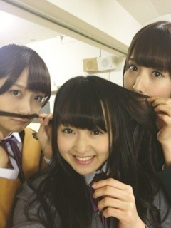

| 2012/11 18 Sun | 293回目*marika |
こんばんまりっか。
今日は似顔絵会と
BLTカレンダーお渡し会が
ありました！
黒のベレー帽にした
 ♪
♪
♪
当たった方、
おめでとうございました！
んー緊張した。
手が震えた震えた！
私は生声録音会だったからなー
ああ、懐かしい...
なので似顔絵会は初だったのです。
緊張してた私に
「大丈夫だよ」と声をかけてくださり
ありがとうございました><
どうだったかな。
上手く描けたかな？
たくさんお話できたけど、
絵を描くのには足りなかったー><
ぜひ飾ってください
 笑
笑
笑
......
そして、お渡し会！

まいまい、みさみさ
お姉ちゃんたちと一緒でした♪
J列は深川書店 店長まいまい、
ちょっぴり厳しいみさ先輩、
そして新人アルバイトまりか
の設定でやってた
 つもり。←
つもり。←
つもり。←
楽しかったです♪
握手会まだかな～
**********
 衣装って最初から誰が
衣装って最初から誰が
どれ着るってきめられてるの？
 そりゃそーよー！
載せてた可愛い毛糸ちゃんや
そりゃそーよー！
載せてた可愛い毛糸ちゃんや
レースは何に使うの？？
リメイクとか？
245回目の記事に作った
ブローチ載ってるので見てください!
あんな感じでまた作ってみます

男のパーマはどう思います？
おしゃれだなーって思います！
もし自分が男なら乃木坂の
メンバーの誰と付き合う？
かなりんかなー！意外⁇
キャベツとレタスと白菜
どれが一番好き？
どれもすき。選べない！
今度まりかちゃんに
会いに行っていいですか？
もちろんっ
 嬉しいです！
おしゃれってどこから
嬉しいです！
おしゃれってどこから
はじめたらいいですかね？
まずは挑戦してみよう
っていう気持ちかな！
似合う似合わない関係なく
すきなの着てみよう
 って思います。
って思います。
って思います。
*********
今日がゆみ姉にとって
最後のイベントでした。
ゆみこゆみこゆみこゆみこゆみこ
ゆみこゆみこゆみこゆみこゆみこ
ゆみこゆみこおおおおおおぉぉおお

え？
ハートとか描いてうっとおしい？笑
だってだいすきなんだもん。
今日の似顔絵会でちらっと見たけど
ゆみ姉さすが絵うまい！
お渡し会前にみんなで
パーティーしたんだよ。
ケーキはねねと一緒に運んだよ^^
花束と、みんなで書いた
メッセージカードも渡しました。
思い出たくさんあるな。
最後までゆみ姉いじりって
乃木坂らしい＊‼
ゆみ姉、本当にお疲れ様でした。
ずーっと応援してる！
ここで終わりじゃない。
愛してるゆみこ

きゃ
これからもがんばろう！！！！！！
まりか
コメント(190)
2012/11/18 23:48